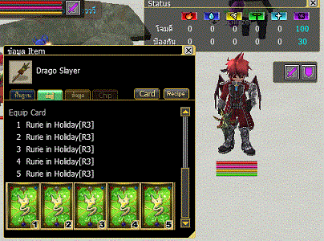

^
ก็เอามาบวกกัน

r3 พอ r4 เปลือง

DON มืด 100 กายภาพ 5 hit ยัดธาตุอื่นไปก็ไม่มีผล ถ้าอยากเล่นธาตุอื่นก็ ใช้ spear cyclone แทนแรงกว่ากันอีก ร่ายไวด้วย แต่ 3 hit

 โดย ECO » เสาร์ 05 มี.ค. 2011 3:09 am
โดย ECO » เสาร์ 05 มี.ค. 2011 3:09 am
 โดย ECO » เสาร์ 05 มี.ค. 2011 3:30 am
โดย ECO » เสาร์ 05 มี.ค. 2011 3:30 am
LenYuKi เขียน:อัพสเตตัส ยังไงละนี้ อยากเล่นสาย ตีเร็วเเรงอะครับ ถ้าเป็น สวอดเเมนก็ Str-Agi Str-Dex อะครับ ใส่ทวนสองมือ
(เล่น เผ่า อีมิ้ว-หรือ - ปีศาจดี ครับ


 โดย ECO » เสาร์ 05 มี.ค. 2011 5:20 am
โดย ECO » เสาร์ 05 มี.ค. 2011 5:20 am

 โดย ECO » เสาร์ 05 มี.ค. 2011 9:24 am
โดย ECO » เสาร์ 05 มี.ค. 2011 9:24 am
 ถ้าไม่มีใจจะเล่นจริงอย่าเล่นเลย จิตตกเปล่าๆเดี่ยวจะกลายเป็นโซล
ถ้าไม่มีใจจะเล่นจริงอย่าเล่นเลย จิตตกเปล่าๆเดี่ยวจะกลายเป็นโซล โดย ECO » เสาร์ 05 มี.ค. 2011 12:17 pm
โดย ECO » เสาร์ 05 มี.ค. 2011 12:17 pm
Levotia เขียน:Bakana เขียน:^
ขอบคุณนะคะสำหรับคำแนะนำ ^/\^
ก็คิดๆไว้ว่าจะลากให้เพื่อนในริงอ่ะค่ะแล้วถ้าเอาพระสิงแล้วคอยฮิลหมู่ให้น่ะค่ะ (ดีหรือเปล่า T^T)
ก็เลยคิดว่าน่าจะถึกๆหน่อยอ่ะค่ะ
ส่วนเวลาอยากจะไปเวลเองก็คิดหนักเหมือนกันอ่ะค่ะ ถ้าเล่น Str-Agi-Vit จะอัพยังไงดีอ่ะคะ
แล้ว Dex ต้องอัพไหมคะถ้าเล่นสายนี้
ส่วนอาวุธก็อยากจะใช้หอกสองมืออ่าค่ะ
แล้วเรื่อง ธาตุมืดกับธาตุแสงก็ยังงงอยู่อ่าค่ะ ว่าเล่นธาตุไหนดีกว่ากันน่ะค่ะ
รบกวนผู้รู้ด้วยนะคะ (ตอนนี้ก็ลงดันกับเพื่อน ไนท์เวล 66 แล้วค่ะ)
 โดย ECO » เสาร์ 05 มี.ค. 2011 12:38 pm
โดย ECO » เสาร์ 05 มี.ค. 2011 12:38 pm
 โดย ECO » เสาร์ 05 มี.ค. 2011 12:41 pm
โดย ECO » เสาร์ 05 มี.ค. 2011 12:41 pm


 โดย ECO » เสาร์ 05 มี.ค. 2011 12:45 pm
โดย ECO » เสาร์ 05 มี.ค. 2011 12:45 pm
 โดย ECO » เสาร์ 05 มี.ค. 2011 1:04 pm
โดย ECO » เสาร์ 05 มี.ค. 2011 1:04 pm
๛RAVE๛ เขียน:อีกนิด DoN กด Evil Soul แรงขึ้นไหม
๛RAVE๛ เขียน:DoN มืด 100 ตามภาพแล้วธาตุโจมตีมืด 100 หากโจมตีมันจะคิด 200 เลยไหม= =
DoN มืด 100 สมมุติธาตุโจมตีแสงเรามากกว่า 100 DoN ก็ยังมืดหรอ โอว์ไมมมมมมมม่
 โดย ECO » เสาร์ 05 มี.ค. 2011 1:08 pm
โดย ECO » เสาร์ 05 มี.ค. 2011 1:08 pm
LUTECIA เขียน:จะอับตามก็เชิญถ้าหาออฟชั่นไหวนะ
http://img231.imageshack.us/img231/1706 ... 125127.jpg
http://image.free.in.th/z/im/ss20110227_081121.jpg

 โดย ECO » เสาร์ 05 มี.ค. 2011 1:12 pm
โดย ECO » เสาร์ 05 มี.ค. 2011 1:12 pm
 โดย ECO » เสาร์ 05 มี.ค. 2011 2:02 pm
โดย ECO » เสาร์ 05 มี.ค. 2011 2:02 pm
 โดย ECO » เสาร์ 05 มี.ค. 2011 2:20 pm
โดย ECO » เสาร์ 05 มี.ค. 2011 2:20 pm

 โดย ECO » เสาร์ 05 มี.ค. 2011 5:45 pm
โดย ECO » เสาร์ 05 มี.ค. 2011 5:45 pm
 โดย ECO » เสาร์ 05 มี.ค. 2011 8:33 pm
โดย ECO » เสาร์ 05 มี.ค. 2011 8:33 pm
กำลังดูบอร์ดนี้: ไม่มีสมาชิก และ บุคคลทั่วไป 2 ท่าน